7 Data Manipulation and Statistical Layers
7.1 Introduction
In previous chapters, we built visualisations directly from tidy data frames. In practice, however, data rarely arrives in exactly the form a plot needs: we may need to filter to a relevant subset, create new variables, or count occurrences before plotting. This chapter ties together several loose ends from earlier chapters and practicals, and introduces a few new concepts — Q-Q plots and density overlays — by examining two complementary approaches:
- Approach A — Manipulate the data first using
dplyr, then pass the result toggplot2; - Approach B — Let
ggplot2do the work using built-in functions and parameters.
Neither approach is always better. Knowing both gives you flexibility.
7.2 Data manipulation with dplyr
Because data visualisation cannot be done in isolation, we have already used
several functions from dplyr throughout the notes and practicals. dplyr is
the standard R package for data manipulation and the natural companion to
ggplot2 — both are part of the tidyverse family of packages.
While the majority of dplyr’s functionality is beyond the scope of this
module, there are six key functions you should know. For some, you only need
to be able to read and understand code that uses them; for others, you will
be expected to write them yourself.
| Function | What it does | Closest Excel operation |
|---|---|---|
filter() |
Keep rows matching a condition | AutoFilter |
mutate() |
Create or modify columns | Adding a formula to a new column |
count() |
Count occurrences of each value | COUNTIF, or a pivot table |
arrange() |
Sort rows by one or more columns | Data \(\to\) Sort |
group_by() |
Group data for subsequent operations | Pivot table grouping |
summarise() |
Compute summary statistics per group | Pivot table values |
Note: group_by() and summarise() are typically used together. You only
need to be able to read code using these two functions — you will not be
asked to write them from scratch in this module.
These functions work naturally in |> pipelines. For example:
mpg |>
filter(cyl == 4) |> # keep only 4-cylinder cars
mutate(ratio = hwy / cty) # create a new column7.2.1 Two ways to do things
A recurring theme in this chapter is that the same visualisation can often be achieved in two different ways:
- Approach A: Manipulate the data explicitly with
dplyr, then plot the result. - Approach B: Use functions and parameters built into
ggplot2to perform the computation during plotting.
We compare these approaches across several examples below.
7.3 Bar charts and counting
7.3.1 Approach A: count first, then plot
Approach A is to count explicitly using dplyr::count(), then use
geom_col() to plot the pre-computed values:
cyl_counts <- mtcars |>
count(cyl) |>
rename(cylinders = cyl, count = n)
cyl_counts## cylinders count
## 1 4 11
## 2 6 7
## 3 8 14ggplot(cyl_counts, aes(x = factor(cylinders), y = count)) +
geom_col() +
labs(x = "Cylinders", y = "Count")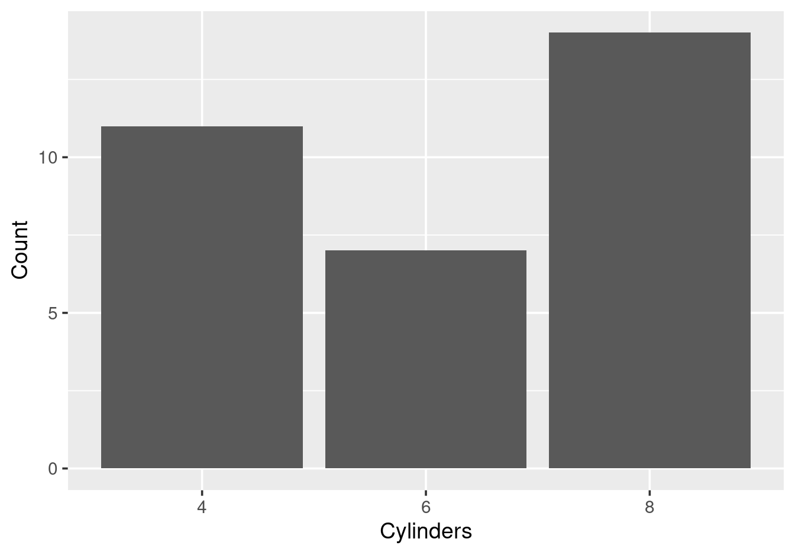
Figure 7.1: Bar chart from pre-counted data using geom_col().
geom_bar(stat = "identity") is equivalent to geom_col(). Both produce the
same result, and both require a y aesthetic (the pre-computed count).
7.3.2 A common mistake
When working with pre-counted data, a common mistake is to forget to set
stat = "identity" and use plain geom_bar() instead:
ggplot(cyl_counts, aes(x = factor(cylinders))) +
geom_bar() +
labs(x = "Cylinders", y = "Count")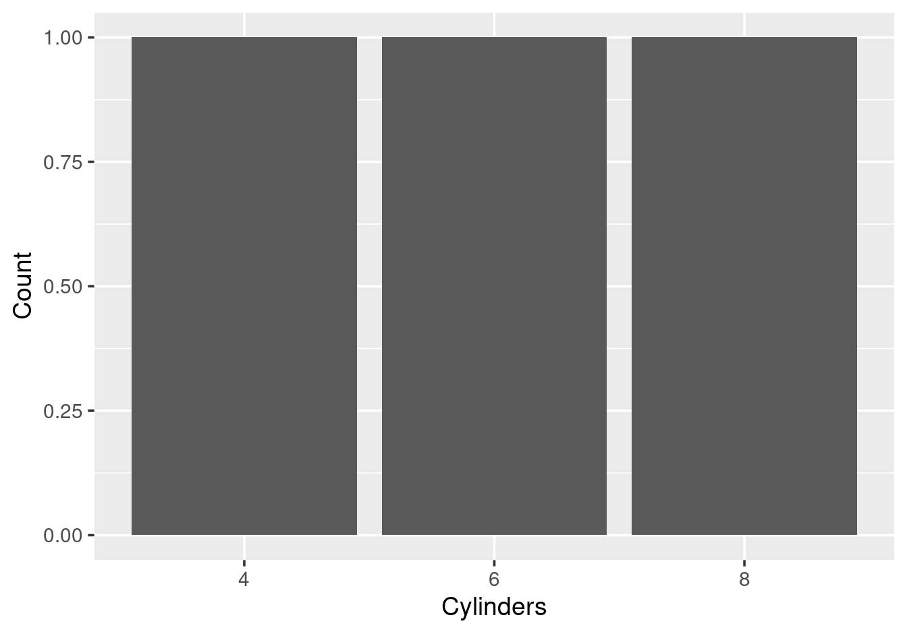
Figure 7.2: Attempting geom_bar() with pre-counted data — each bar has height 1, not the actual count.
Each bar has height 1 because geom_bar() counts the rows in our summary
table (there is one row per cylinder value), not the original observations.
7.3.3 Approach B: let geom_bar() count automatically
The simplest way to plot the count of each category is to pass the raw data
directly to geom_bar(), which counts observations automatically:
ggplot(mtcars, aes(x = factor(cyl))) +
geom_bar() +
labs(x = "Cylinders", y = "Count")
Figure 7.3: Bar chart from raw data — geom_bar() counts automatically.
7.3.4 The log-scale connection
The automatic counting of geom_bar() is particularly useful when combined
with axis transformations. In Section 5.5.3 (Chapter
5), we plotted counts from simulated geometric data —
but we had to count the data manually with count() first, then used
geom_point(). With geom_bar(), we can skip the counting step and work
directly from the raw data:
set.seed(42)
raw_geom <- data.frame(x = rgeom(10000, prob = 0.5))
ggplot(raw_geom, aes(x = x)) +
geom_bar() +
scale_y_log10() +
labs(x = "x", y = "Count (log scale)")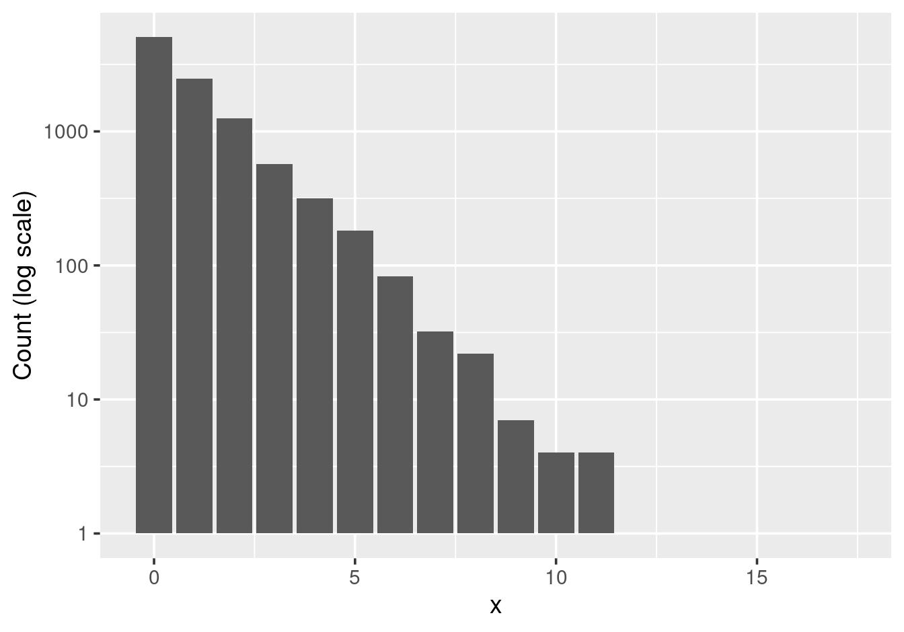
Figure 7.4: Bar chart of geometric data on a log scale, using geom_bar() without pre-counting.
geom_bar() counts the occurrences of each value of x automatically, so
there is no need to call count() first. Adding scale_y_log10() produces
the same linearising effect on the log scale.
7.3.5 What geoms compute for you
Most geoms in ggplot2 compute something before displaying the data. The table
below shows what each geom computes. Notice that geom_col() and geom_point()
are the exceptions: they use values as-is and require both x and y
aesthetics.
| Geom | What it computes |
|---|---|
geom_bar() |
Counts observations per category |
geom_histogram() |
Bins continuous data and counts |
geom_density() |
Computes kernel density estimate |
geom_smooth() |
Fits a smoother (loess or lm) |
geom_boxplot() |
Computes five-number summary |
geom_col() |
Uses values as-is (no computation) |
geom_point() |
Uses values as-is (no computation) |
This is why geom_bar() and geom_histogram() only need an x aesthetic —
they compute y (the counts) themselves.
7.4 Subsetting data
Suppose you want to focus on a subset of the data in a plot. There are three common approaches.
7.4.1 Approach A
Use dplyr::filter() to remove unwanted observations before
plotting:
mpg |>
filter(displ >= 2, displ <= 6, hwy >= 15, hwy <= 40) |>
ggplot(aes(x = displ, y = hwy)) +
geom_point() +
labs(x = "Engine Displacement (L)", y = "Highway MPG")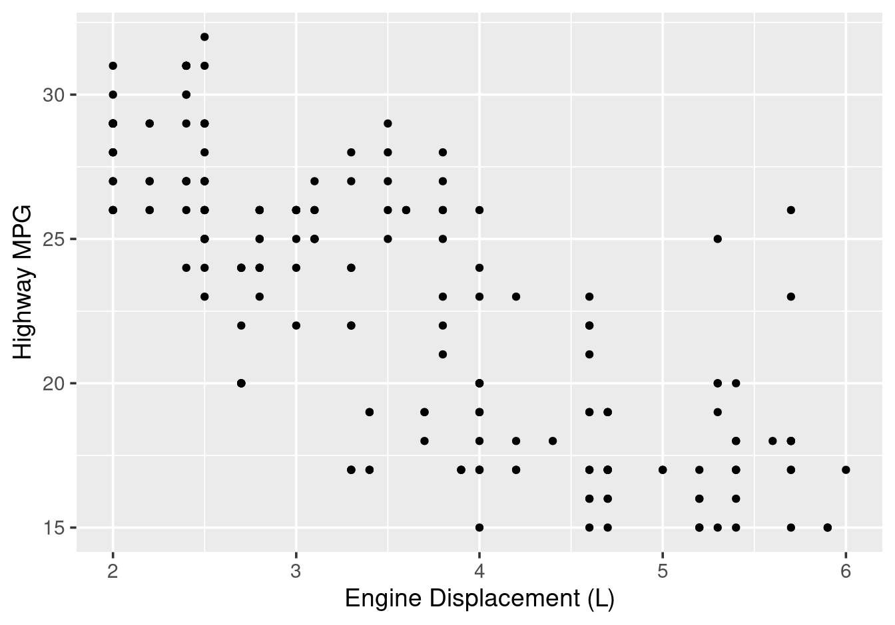
Figure 7.5: Filtering to a subset with dplyr::filter().
7.4.2 Approach B(i)
Use scale_x_continuous(limits = ) to set axis limits
(covered in Section 5.5 of Chapter 5):
ggplot(mpg, aes(x = displ, y = hwy)) +
geom_point() +
scale_x_continuous(limits = c(2, 6)) +
scale_y_continuous(limits = c(15, 40)) +
labs(x = "Engine Displacement (L)", y = "Highway MPG")## Warning: Removed 33 rows containing missing values or values outside
## the scale range (`geom_point()`).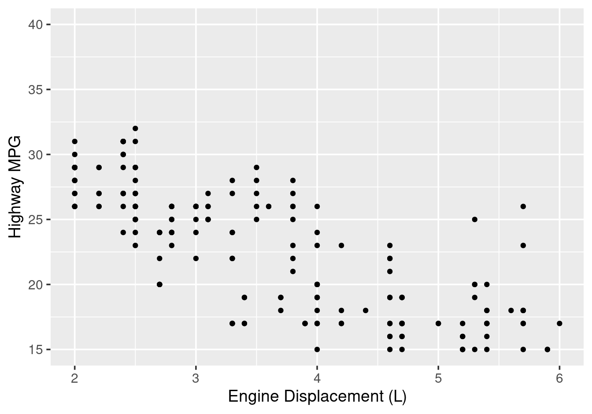
Figure 7.6: Setting axis limits with scale_*_continuous() removes data outside the range.
7.4.3 Approach B(ii)
Use coord_cartesian() to zoom visually without
removing data (covered in Section 6.3.1 of Chapter
6):
ggplot(mpg, aes(x = displ, y = hwy)) +
geom_point() +
coord_cartesian(xlim = c(2, 6), ylim = c(15, 40)) +
labs(x = "Engine Displacement (L)", y = "Highway MPG")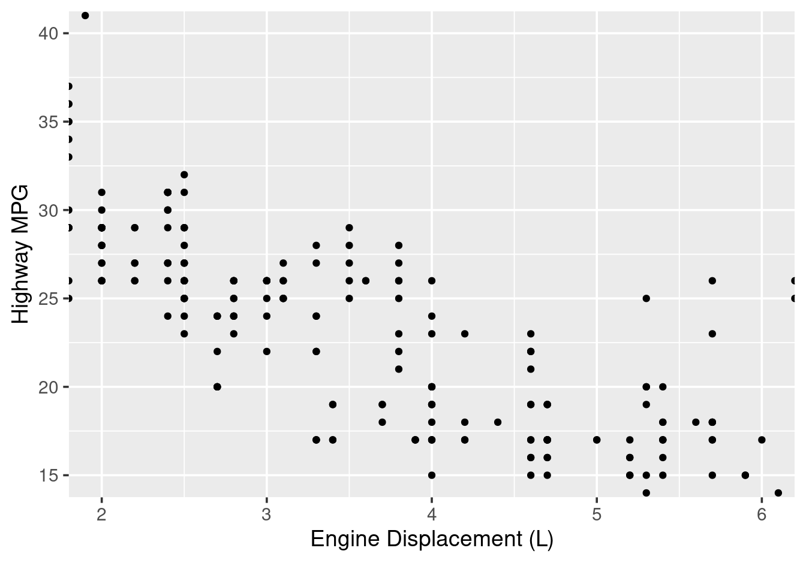
Figure 7.7: Zooming with coord_cartesian() preserves all data.
The three plots look visually similar, but there is an important difference:
filter()andscale_*_continuous(limits = )both remove data. Any statistical layers added later (e.g.,geom_smooth()) will be computed from only the remaining data.coord_cartesian()zooms without removing data. Statistical layers are still computed from all observations.
When to use each:
- Use
filter()when you genuinely only want to analyse a subset (the removed data is truly irrelevant). - Use
scale_*_continuous(limits = )for a similar purpose, thoughfilter()is often clearer. - Use
coord_cartesian()when you want to zoom in for visual clarity while keeping all data for calculations — for example when addinggeom_smooth().
7.5 Overlaying summaries with stat_summary()
7.5.1 Approach A
In Section 3.9.3 of Chapter 3, we
overlaid group means on raw data by first computing the summary with dplyr:
drv_summary <- mpg |>
group_by(drv) |>
summarise(mean_displ = mean(displ))
ggplot() +
geom_jitter(data = mpg,
aes(x = drv, y = displ),
alpha = 0.3, width = 0.2) +
geom_point(data = drv_summary,
aes(x = drv, y = mean_displ),
colour = "red", size = 4) +
labs(x = "Drive Type", y = "Engine Displacement (L)")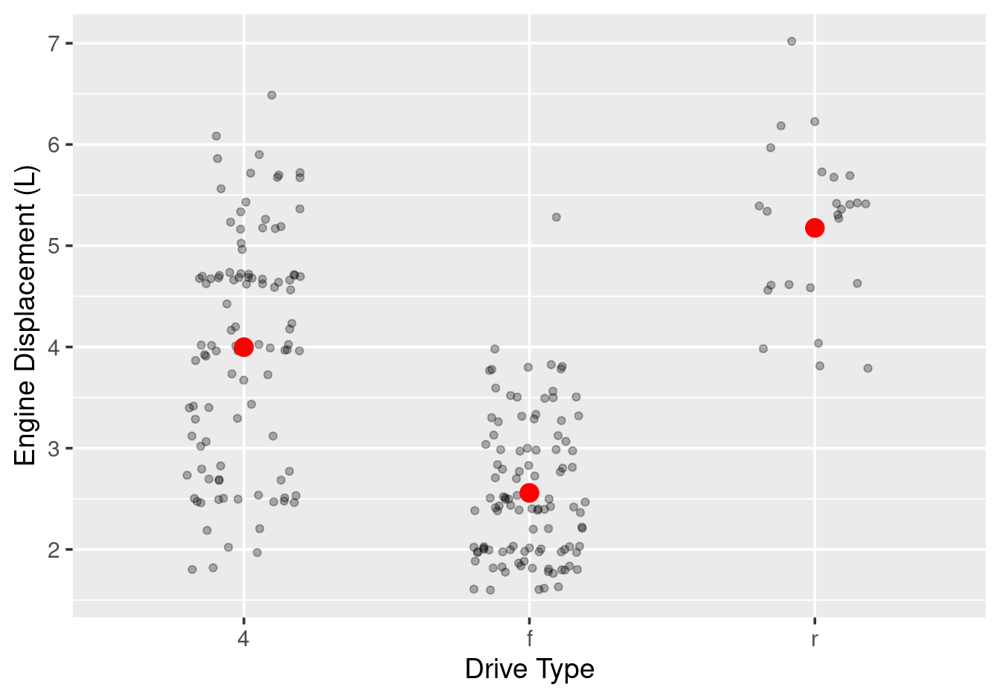
Figure 7.8: Overlaying group means computed with dplyr — from Section 3.9.3.
7.5.2 Approach B
The same result is achieved using stat_summary(), without
needing a separate summary data frame:
ggplot(mpg, aes(x = drv, y = displ)) +
geom_jitter(alpha = 0.3, width = 0.2) +
stat_summary(fun = mean, geom = "point",
colour = "red", size = 4) +
labs(x = "Drive Type", y = "Engine Displacement (L)")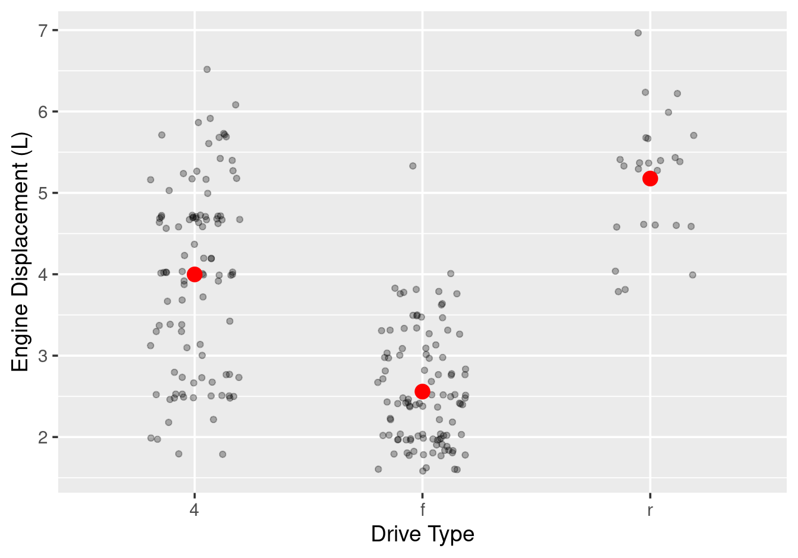
Figure 7.9: Overlaying group means using stat_summary() — no separate data frame needed.
The result is identical. We pass the raw mpg data to ggplot() and let
stat_summary() compute the group means on the fly. stat_summary() takes:
fun: the function to compute per group (e.g.,mean,median,max)geom: how to display the result (e.g.,"point","bar","line")
This approach keeps the workflow cleaner when the summary is only needed for
the plot. Use dplyr when you need the summary for other purposes (tables,
further analysis) or want to inspect it before plotting.
7.6 Histogram with density overlay
In Chapter 3 (Section 3.4.1), we
introduced geom_histogram() using the mpg dataset:
ggplot(mpg, aes(x = displ)) +
geom_histogram(binwidth = 0.5) +
labs(x = "Engine Displacement (L)", y = "Count")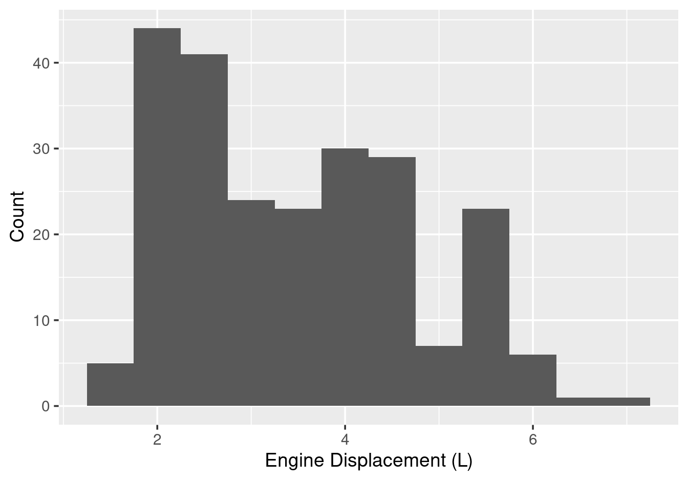
Figure 7.10: Histogram of engine displacement (from Chapter 3).
A natural desire is to overlay a density curve on this histogram. However,
the default histogram uses counts on the \(y\)-axis, while geom_density()
uses density (area = 1). These are on entirely different scales, so a naive
overlay does not work:
ggplot(mpg, aes(x = displ)) +
geom_histogram(binwidth = 0.5) +
geom_density() +
labs(x = "Engine Displacement (L)", y = "Count")Figure 7.11: A naive overlay: the density curve appears as a flat line near zero because the two geoms are on different scales.
The density curve is barely visible near the bottom of the plot because the
histogram \(y\)-axis reaches around 40 (counts), while density values are much
smaller. The solution is to rescale the histogram to density units using
after_stat(density):
ggplot(mpg, aes(x = displ)) +
geom_histogram(aes(y = after_stat(density)), binwidth = 0.5) +
geom_density() +
labs(x = "Engine Displacement (L)", y = "Density")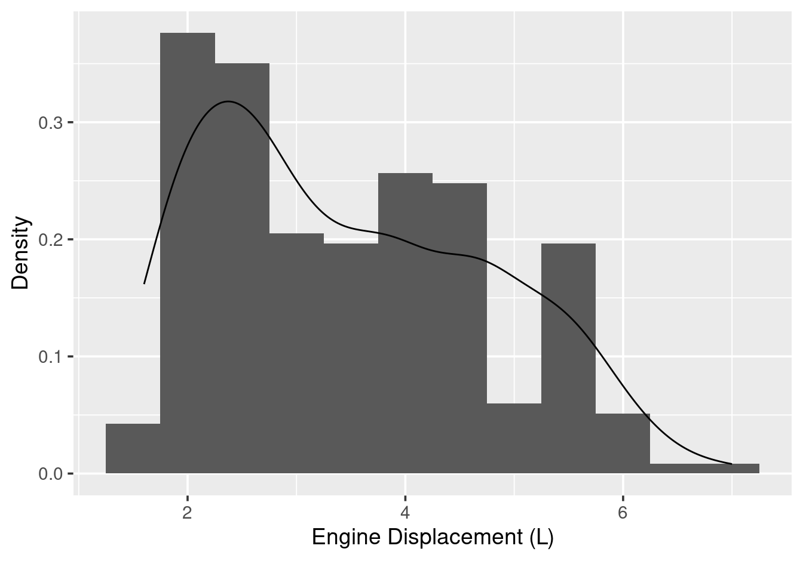
Figure 7.12: Histogram with density overlay, using after_stat(density) to put both on the same scale.
after_stat(density) accesses the density variable computed internally by
geom_histogram(), which rescales the bar heights to density units and makes
them comparable to the density curve. Note that after_stat() is only needed
for the histogram, not for geom_density().
7.7 Q-Q plots for assessing normality
Quantile-Quantile (Q-Q) plots are a diagnostic tool for assessing whether data follow a particular theoretical distribution, most commonly the normal distribution. They are particularly useful before applying statistical methods that assume normality, such as t-tests or ANOVA.
7.7.1 Why not just use a histogram or density plot?
To illustrate the issue, let us simulate data from the standard normal distribution and look at its histogram and density together:
set.seed(42)
normal_data <- data.frame(x = rnorm(200))
ggplot(normal_data, aes(x = x)) +
geom_histogram(aes(y = after_stat(density)), binwidth = 0.4) +
geom_density(linewidth = 1) +
labs(x = "x", y = "Density")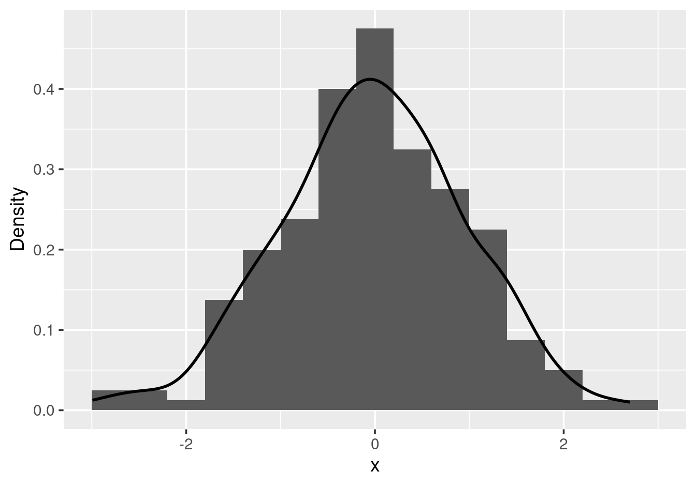
Figure 7.13: Histogram and density of 200 simulated standard normal values.
The shape looks roughly bell-shaped and symmetric — as expected from normal data. But now suppose we are looking at real data and ask: do the tails follow the normal distribution? From a histogram or density plot, it is genuinely difficult to judge. The bars at the extremes are short and it is hard to tell whether they are where they should be under normality.
Q-Q plots are a much better diagnostic for the tails. They plot the sample quantiles against the theoretical quantiles of the normal distribution: if the data follow the normal distribution, the points should fall approximately on a straight reference line.
7.7.2 Q-Q plots in ggplot2
Use geom_qq() for the points and geom_qq_line() for the reference line:
ggplot(normal_data, aes(sample = x)) +
geom_qq() +
geom_qq_line(linewidth = 1) +
labs(x = "Theoretical Quantiles", y = "Sample Quantiles")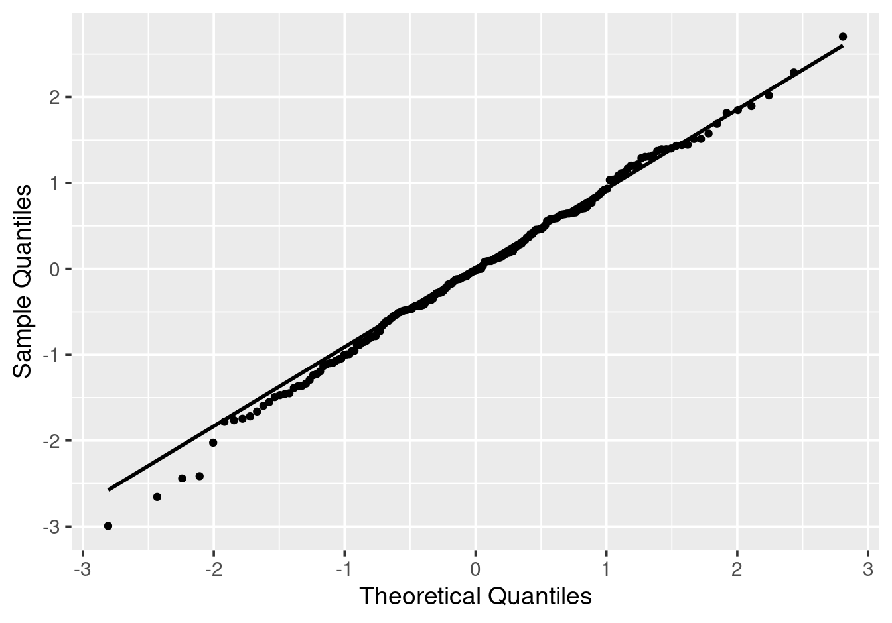
Figure 7.14: Normal Q-Q plot using ggplot2.
Note that the aesthetic is sample rather than x or y — this tells
geom_qq() which variable to compare against the theoretical distribution.
7.7.3 Interpreting Q-Q plots
If the points fall approximately along the reference line, the data are approximately normally distributed. Deviations indicate departures from normality:
- Points curving upward on the right & downward on the left: Heavy tails (more extreme values than expected under normality)
- Points curving downward on the right & upward on the left: Light tails (fewer extreme values than expected under normality)
- Asymmetry around line perpendicular to reference line: Skewness in the data
7.8 Summary
The following table summarises the five examples in this chapter where the same visualisation can be achieved in two ways. These examples only scratch the surface — data manipulation is a vast field — but they are the ones in scope for this module.
| Visualisation | Approach A: dplyr first | Approach B: ggplot2 built-in |
|---|---|---|
| Bar chart of counts | count() \(\to\) geom_col() |
geom_bar() (counts automatically) |
| Subset a scatterplot | filter() \(\to\) geom_point() |
scale_*_continuous(limits = ...) or coord_cartesian() |
| Raw data \(+\) group summaries | group_by() \(+\) summarise() \(\to\) two data frames |
stat_summary(fun = ...) |
| Histogram \(+\) density overlay | (not straightforward) | geom_histogram(aes(y = after_stat(density))) \(+\) geom_density() |
| Q-Q plot | (not available in base ggplot2) |
geom_qq() \(+\) geom_qq_line() |